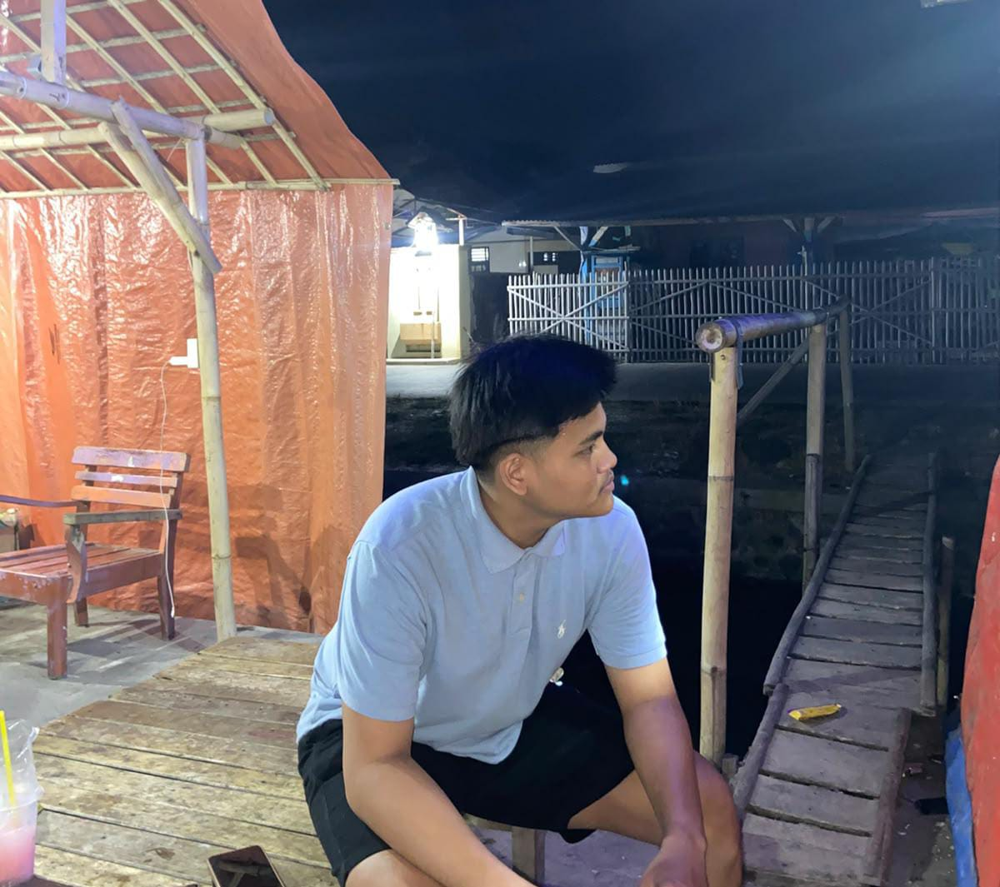
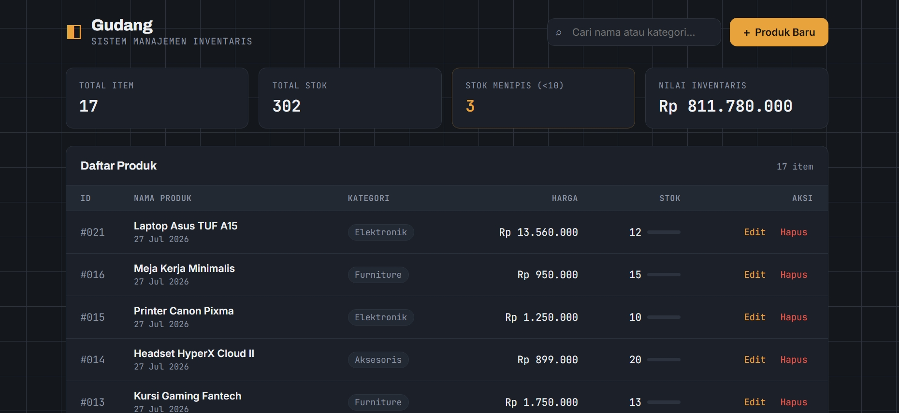
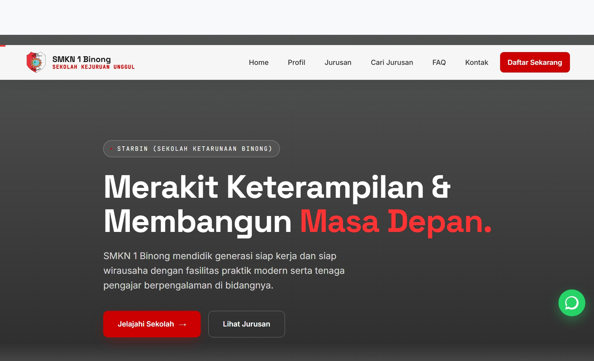

HTML
Belajar membangun fondasi dan kerangka website yang rapi menggunakan elemen semantik bawaan web native.
HELLO SAYA
Siswa SMKN 1 BINONG
Sebagai pemula, saya memilih untuk tekun mempelajari hal mendasar terlebih dahulu. Saya terbiasa membangun antarmuka web yang sederhana, cepat, dan bersih dengan berfokus pada dasar-dasar penting: HTML semantik, CSS yang efisien, dan JavaScript native.
Lihat Portfolio
Saya seorang pelajar yang sedang fokus mendalami dunia front-end web development. Saya senang belajar menyusun antarmuka website yang rapi, bersih, dan mudah digunakan. Saat ini, fokus utama saya adalah memperkuat pemahaman dasar pada HTML semantik, CSS responsif, dan JavaScript native untuk membangun halaman web yang ringan dan terstruktur.
Belajar membangun fondasi dan kerangka website yang rapi menggunakan elemen semantik bawaan web native.
Belajar membangun tampilan web yang bersih dan minimalis melalui pemanfaatan struktur Flexbox dan Grid dasar, dengan tetap menjaga kerapian kode tanpa tambahan library yang berlebihan.
Memahami logika dasar pemrograman, manipulasi DOM, serta penanganan event interaktif secara native.

Proyek latihan membangun sistem pendataan inventaris berbasis web menggunakan tampilan dashboard minimalis bertema gelap. Fokus utama proyek ini adalah melatih logika pengelolaan data CRUD (Tambah, Edit, Hapus produk), fitur filter pencarian instan, serta penyajian ringkasan metrik stok dan kalkulasi nilai barang agar mudah dibaca pengguna.

Eksperimen kecil dalam merancang website profil sekolah yang minimalis. Dibuat menggunakan struktur kode dasar untuk menampilkan informasi dasar sekolah, program keahlian, dan tombol aksi tanpa melibatkan fungsi sistem yang terlalu rumit.